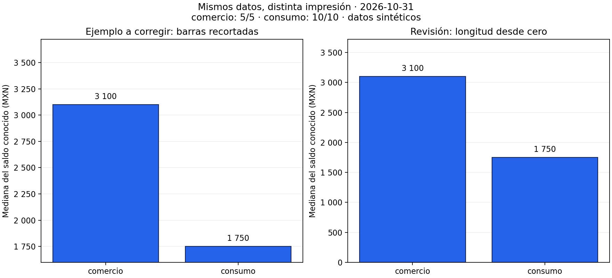
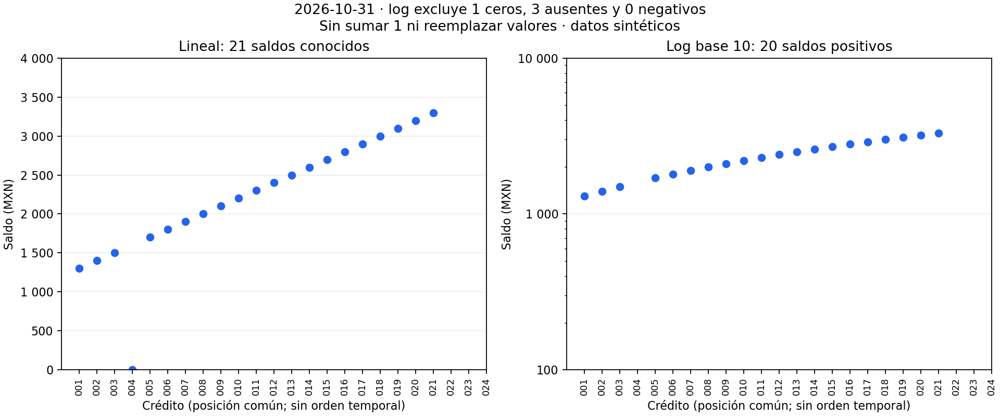
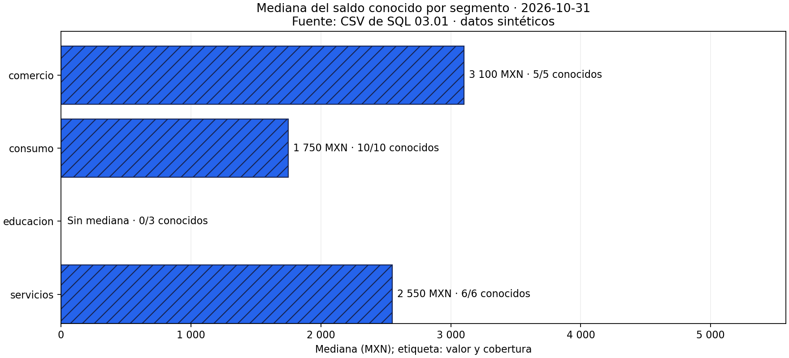
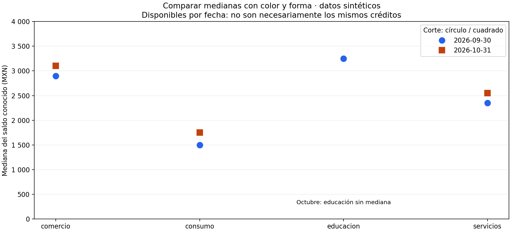

04.05 — Escalas, etiquetas y accesibilidad
MÓDULO 04 / 04.05
Contenido / Visualización en Python
Inicio / Módulo 04 / Lección 04.05
| Tu sesión | Qué prepararás o comprobarás |
|---|---|
| Meta | Revisar escalas, etiquetas y señales para comunicar datos sin ocultar límites |
| Necesitas | Pandas/Matplotlib y fuentes compartidas; sin certificación de accesibilidad |
| Evidencia | Figura corregida, tabla, descripción y decisiones justificadas |
Preparación · Material de apoyo · Ir al lab · Comprobar
Propósito
Revisar una figura antes de comunicarla: comprobar qué mide, qué parte de los datos muestra y cómo sus ejes, etiquetas y señales afectan la interpretación. Una figura puede usar valores correctos y aun así sugerir una conclusión incorrecta.
Antes de empezar
Completa 04.04 — Distribuciones y relaciones y su lab. Reutiliza Figure y Axes de 04.02 y las bases de comparación de 04.03. No necesitas calcular logaritmos a mano ni conocer estadística inferencial.
Esencial: límites, escala lineal y logarítmica, unidades, cobertura, señales adicionales al color y descripción textual. Práctica: corregir una figura y justificar cada decisión. Ampliación: revisar contraste en un destino web; no se exige certificar accesibilidad ni construir una aplicación.
Qué vas a aprender
- Detectar barras recortadas y distinguir un acercamiento legítimo de una comparación de longitudes engañosa.
- Explicar distancias aditivas en escala lineal y razones en escala logarítmica.
- Conservar ceros, negativos y ausencias cuando no puedan dibujarse en log.
- Escribir títulos, unidades y etiquetas que identifiquen la medida y su base.
- Comunicar categorías con formas, texto o tramas además de color.
- Acompañar una figura con su tabla y una descripción comprensible sin verla.
Material de apoyo
| Recurso | Para qué sirve | Uso |
|---|---|---|
| Script de ejemplo | Contrastar escalas, exclusiones, etiquetas y señales | Para el recorrido |
| Fuentes de SQL | Consultar saldos y cortes originales | Entradas compartidas |
| Figura etiquetada | Leer mediana, unidad y cobertura explícitas | Para observar |

Las figuras incluidas sirven para observar y contrastar. Abre el script cuando el recorrido lo indique para regenerar o practicar; conserva las fuentes y las entregas anteriores y utiliza los destinos de práctica indicados.
Contexto y datos del recorrido
Usamos los CSV sintéticos de SQL 03.01, con 24 créditos por corte. Para octubre, 21 saldos son conocidos: uno es cero y 20 son positivos; tres están ausentes. El script scales.py reutiliza la lectura y los cuartiles de 04.04, sin modificar CSV ni SQLite. La reutilización interna del script no es un ejercicio de organización de paquetes; ese tema pertenece al módulo 05.
| Segmento, octubre | Mediana conocida (MXN) | Saldos conocidos / registros |
|---|---|---|
| comercio | 3 100 | 5/5 |
| consumo | 1 750 | 10/10 |
| educacion | Sin mediana | 0/3 |
| servicios | 2 550 | 6/6 |
Cada crédito aporta un saldo en ese corte. Las medianas describen los datos conocidos, no garantizan la mediana de todo el segmento. Aquí los datos son ficticios: no permiten conclusiones sobre una cartera real. La cobertura tampoco equivale a un intervalo de confianza.
1. Límites del eje: la longitud de una barra tiene una base
La escala establece cómo se transforma un valor en una posición. Los límites indican qué rango se ve. Las marcas señalan posiciones del eje y su formato decide cómo se escriben. Son decisiones diferentes.

Los dos paneles representan exactamente 3 100 y 1 750 MXN. En el izquierdo, el límite inferior es 1 600; las longitudes visibles son 1 500 y 150: la primera parece diez veces la segunda. En el derecho las barras empiezan en cero y su razón es 3 100 / 1 750 ≈ 1,77. La diferencia sigue siendo 1 350 MXN. Cambiar límites no aumenta el saldo ni cambia esa diferencia.
En barras de importes no negativos, usa origen cero: se compara longitud desde una base. Si existen valores negativos, incluye cero y los valores a ambos lados; no fuerces límites que oculten parte del dato. Para examinar diferencias pequeñas puedes elegir puntos con un rango acotado, explicitarlo y ofrecer una vista de contexto. No presentar barras recortadas como comparación proporcional.
En líneas o dispersión no siempre es necesario partir de cero: interesa posición o cambio, no longitud de una barra. Un acercamiento debe indicar sus límites, conservar los puntos relevantes y no sugerir una magnitud mayor sin contexto. La pendiente visual también depende de la relación entre ancho y alto del panel; un ángulo pronunciado no es una medida de crecimiento por sí mismo.
# ax es el Axes creado con plt.subplots, como en 04.02.
ax.set_ylim(0, 4000) # Rango visible; no altera los valores de las barras.
ax.set_ylabel("Mediana del saldo conocido (MXN)")Al comparar paneles con la misma medida, usa límites comunes si quieres comparar posiciones o longitudes directamente. Con escalas distintas, decláralas y evita leer una altura igual como valor igual. No uses dos ejes verticales para sugerir asociación ajustando sus rangos; en esta práctica preferimos paneles separados.
2. Lineal: diferencias; logarítmica: razones
En una escala lineal, incrementos iguales ocupan distancias iguales: 1 000 → 2 000 y 2 000 → 3 000 avanzan 1 000 MXN cada vez. En una escala logarítmica, factores iguales ocupan distancias iguales: 100 → 1 000 y 1 000 → 10 000 multiplican por diez. También 100 → 200 y 1 000 → 2 000 duplican el valor y tienen la misma distancia logarítmica. La base 10 es habitual; cambiar la base no convierte razones en diferencias.

El panel lineal muestra los 21 conocidos, incluido cero. El logarítmico muestra 20 positivos; mantiene las posiciones de los créditos para poder cotejar ambos paneles. No conecta puntos: la posición de crédito no es una secuencia temporal. El cero sigue en corte.csv y en excluidos_log.csv con su motivo.
Una escala log real requiere valores estrictamente positivos. Cero no tiene logaritmo finito y los negativos no pertenecen a ese dominio. Un ausente sigue siendo desconocido. No sumar 1, reemplazar cero por un número pequeño ni borrar filas para que «funcione»: esas acciones cambian la medida o esconden su base.
# selected es el corte preparado: una fila por crédito.
positivos = selected.loc[selected["saldo_mxn"].gt(0).fillna(False)].copy()
ax.scatter(range(len(positivos)), positivos["saldo_mxn"].astype(float))
ax.set_yscale("log", base=10)
ax.set_ylabel("Saldo (MXN), escala log base 10")Este fragmento muestra la selección, pero no constituye la entrega completa: debes conservar los excluidos con motivos, como hace scales.py. Matplotlib puede enmascarar o recortar valores no positivos según su configuración; no sustituye la comprobación de datos. Cambiar el eje tampoco cambia la mediana aritmética calculada sobre los valores originales ni transforma el CSV en logaritmos.
Log puede ayudar cuando hay varios órdenes de magnitud y la pregunta trata de razones. Los positivos de este corte están entre 1 300 y 3 300 MXN: no hay una necesidad fuerte de log, y excluir el cero cuesta información. Para describir todos los saldos conocidos elegimos la vista lineal. El panel log es una comparación didáctica. Otras escalas para negativos son una ampliación, no una reparación automática.
3. Etiquetas: nombrar medida, unidad y base
Un título útil responde «¿qué se representa, de quién y cuándo?». Evita «Resultados» o «El segmento más riesgoso»: las medianas de saldo no miden riesgo por sí solas. Indica fuente, corte y origen sintético. En los ejes escribe la unidad; en una tasa declara denominador, como en 04.03. «Porcentaje» sin base es insuficiente.

Lectura sin imagen: comercio tiene mediana conocida 3 100 MXN (5/5); consumo, 1 750 (10/10); servicios, 2 550 (6/6). Educación no tiene mediana: ninguno de sus tres saldos es conocido. No hay una barra de cero para educación. Las tramas, los nombres y las etiquetas siguen transmitiendo información sin depender del azul.
Las marcas del eje también requieren una decisión. «3 100» es el mismo valor que «3100», mientras «3,1 miles de MXN» cambia la unidad de presentación y debe nombrarla. No dividir el dato dos veces. Redondear la etiqueta no debe redondear la tabla de comprobación ni ocultar diferencias relevantes.
from matplotlib.ticker import FuncFormatter
def formato_mxn(valor, posicion):
# posicion es el argumento que entrega Matplotlib; aquí no se utiliza.
return f"{valor:,.0f}".replace(",", " ")
ax.xaxis.set_major_formatter(FuncFormatter(formato_mxn))
ax.set_xlabel("Mediana del saldo conocido (MXN)")FuncFormatter recibe una función que devuelve el texto de cada marca. Se cambia su escritura, no la posición ni la unidad de los datos. En este ejemplo usamos espacios para miles y el texto nombra MXN. Para decimales, explicita una convención coherente y no combines coma de miles y coma decimal.
4. Accesibilidad: varias señales y una alternativa textual
Color puede facilitar la lectura, pero no debe ser la única forma de identificar una categoría. Combina nombres con formas de puntos, estilos de línea o tramas de barras. Evita depender de rojo/verde para «malo/bueno» sin criterio definido. Una paleta no garantiza por sí sola accesibilidad.

En esta comparación septiembre se identifica con círculo y octubre con cuadrado, además de color y fecha en la leyenda. No unimos segmentos nominales con líneas. La tabla medianas_por_corte.csv conserva valores y cobertura por fecha:
| Segmento | Septiembre: mediana MXN (conocidos/registros) | Octubre: mediana MXN (conocidos/registros) |
|---|---|---|
| comercio | 2 900 (5/5) | 3 100 (5/5) |
| consumo | 1 500 (8/10) | 1 750 (10/10) |
| educacion | 3 250 (2/3) | Sin mediana (0/3) |
| servicios | 2 350 (6/6) | 2 550 (6/6) |
La figura permite localizar esas posiciones; que ambos cortes tengan 21 saldos conocidos no garantiza los mismos créditos. No interpretar las diferencias como movimientos individuales sin usar los pares de 04.03.
ax.plot(posiciones, medianas_septiembre, linestyle="None", marker="o",
color="#2563eb", label="2026-09-30")
ax.plot(posiciones, medianas_octubre, linestyle="None", marker="s",
color="#c2410c", label="2026-10-31")
ax.legend(title="Corte: círculo / cuadrado")Aquí posiciones corresponde al orden común de segmentos, y cada lista de medianas conserva una ausencia como NaN; no son variables creadas por este fragmento. El script completo prepara esos datos. marker elige forma y linestyle="None" evita unir categorías. Para series temporales sí puedes combinar marcador y estilo de línea sin conectar huecos de datos.
Revisa el resultado al tamaño real de lectura: texto legible, fondo y señales distinguibles, etiquetas sin superposición. La lectura en escala de grises ayuda a detectar dependencia del color, pero no comprueba todas las deficiencias de visión ni reemplaza una revisión de contraste.
Una figura PNG no ofrece por sí sola una tabla accesible. Acompáñala con:
- Texto alternativo breve que identifique pregunta y hallazgo principal.
- Una descripción cercana con valores, unidades, ausencias y límites.
- La tabla correspondiente en un formato consultable; aquí CSV y la tabla Markdown.
En Markdown,  define el texto alternativo. «Gráfico» o el nombre del archivo no explican su propósito. Para una figura compleja, deja el detalle en texto cercano en lugar de meter una tabla entera en el texto alternativo. La descripción de etiquetas.png de esta lección sirve como ejemplo.
Ampliación: si llevas la figura a una página web, revisa los criterios de contraste aplicables a texto y elementos gráficos en su contexto. Tramas y formas no dispensan de contraste; tampoco se declara conformidad WCAG por una inspección visual. Esta sección ofrece prácticas concretas, no una certificación.
5. Revisar cobertura e incertidumbre antes de afirmar
Una etiqueta precisa no corrige una población incorrecta. «Mediana del saldo conocido» tiene alcance distinto de «mediana del segmento». Por ejemplo, en un grupo hipotético con 4/5 conocidos ignoramos dónde se ubica el saldo restante. Con 0/3, como educación en octubre, no hay mediana conocida; con una selección vacía no hay registros, una situación distinta.
No inventes barras de error para decorar la figura. Un intervalo de confianza requiere un método y supuestos que no se enseñan aquí; los bigotes de 04.04 no son intervalos de confianza. En esta práctica comunicamos cobertura y limitaciones observadas, sin cuantificar incertidumbre que no hemos calculado.
Antes de compartir, recorre este flujo:
flowchart LR
A[Pregunta y base] --> B[Tabla comprobada]
B --> C[Escala y límites]
C --> D[Unidades y señales]
D --> E[Descripción y tabla]
E --> F[Revisar al tamaño de lectura]Sin renderizador: primero comprueba pregunta y datos; después decide ejes, etiquetas y señales, escribe la alternativa textual y revisa la entrega real. Si una escala excluye registros, vuelve a la base y documenta el motivo.
Errores habituales: ocultar extremos con límites; mostrar ausencia como cero; usar log por estética; comparar paneles con rangos distintos sin avisar; dar demasiados decimales; confiar solo en una leyenda de colores; afirmar causalidad o riesgo a partir de saldos. Corrige la decisión y conserva la evidencia original.
6. Reconstruir y comprobar
Usa el entorno elegido en 00.05, ya activado. Referencias del proyecto: pandas 2.3.3 y Matplotlib 3.10.7; verificación local con pandas 2.3.3 y Matplotlib 3.10.6. No hacen falta nuevas dependencias. Desde la raíz, elige un solo recorrido. --output exige carpeta nueva y --cut selecciona el corte para origen, lineal_log y etiquetas. senales conserva la comparación de las dos fechas de las fuentes originales.
PowerShell
# Conda o venv/pip ya activado:
python curriculum/04_visualization_python/05_scales_labels_accessibility/scales.py --cut 2026-10-31 --output curriculum/04_visualization_python/05_scales_labels_accessibility/output/octubre
# Alternativa para uv: ejecutar en lugar del comando anterior.
uv run --locked python curriculum/04_visualization_python/05_scales_labels_accessibility/scales.py --cut 2026-10-31 --output curriculum/04_visualization_python/05_scales_labels_accessibility/output/octubreBash/Zsh
# Conda o venv/pip ya activado:
python curriculum/04_visualization_python/05_scales_labels_accessibility/scales.py --cut 2026-10-31 --output curriculum/04_visualization_python/05_scales_labels_accessibility/output/octubre
# Alternativa para uv: ejecutar en lugar del comando anterior.
uv run --locked python curriculum/04_visualization_python/05_scales_labels_accessibility/scales.py --cut 2026-10-31 --output curriculum/04_visualization_python/05_scales_labels_accessibility/output/octubreSe generan cuatro PNG y cinco CSV: corte, medianas, positivos_log, excluidos_log y medianas_por_corte. Comprueba 24 = 20 positivos + 4 excluidos; los cuatro son un cero y tres ausentes. En la vista lineal hay 21 saldos conocidos. Recalcula las medianas ordenando los valores de cada segmento como en 04.04 y coteja las figuras. La carpeta debe ser nueva: si ya existe, el script se detiene para conservarla. No se escribe ni se reinicia la base SQLite.
Práctica
Realiza el lab 04.05 para corregir una figura y justificar escalas, cobertura y descripción.
Evidencia y criterio de salida
| Conserva | Comprueba | Explica |
|---|---|---|
| Figura corregida y tabla de control | Valores, medida, escala y exclusiones conservados | Qué cambia entre distancias lineales y razones logarítmicas |
| Descripción y señales adicionales al color | Unidades, cobertura y lectura textual recuperables | Qué revisaste para facilitar la lectura y qué no se ha certificado |
Puedes avanzar cuando corrijas una representación problemática, compruebes que mantiene datos y medida, expliques la escala y conserves exclusiones. Entrega figura, tabla, descripción y justificación de cobertura y señales accesibles.
Quien aprende realiza y explica la práctica; su compañero revisa. Tu compañero intenta explicar la figura desde su tabla y descripción y pide justificar una decisión de escala. Guarda evidencia, ayudas y dudas en una nota personal junto a tu práctica. PROGRESS.md conserva el desarrollo editorial; disponer del material no acredita por sí solo aprendizaje completado.
No hay proyecto ni checkpoint implementado asociado a esta lección.
Referencias
Ejemplos, código y figuras propios de DS Track. Se consultaron fuentes primarias para las APIs y las prácticas de comunicación; no se copiaron figuras ni capítulos.
- Matplotlib 3.10.7: escala logarítmica: dominio positivo, base y comportamiento de valores no positivos.
- Matplotlib: formato de marcas: FuncFormatter; stable puede mostrar una versión posterior a la referencia.
- W3C WAI: uso de color: comunicar información mediante señales adicionales.
- W3C WAI: imágenes complejas: descripción breve y equivalente textual detallado.
- Claus O. Wilke: sistemas de coordenadas y ejes, libro abierto Fundamentals of Data Visualization.
Siguiente paso
Después de la práctica y su comprobación, continúa con 04.06 — Composición y exportación.